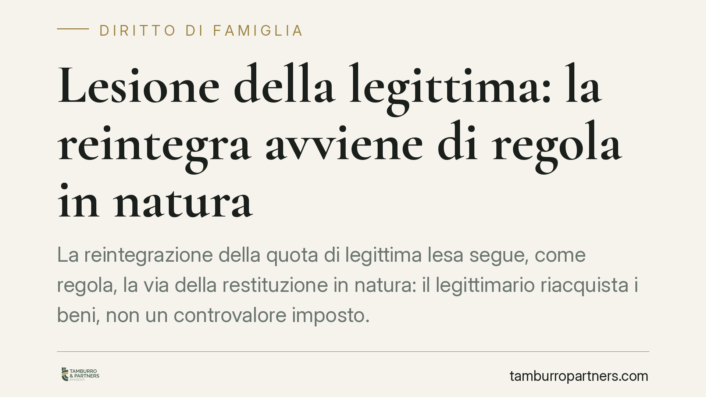

Lesione della legittima: la reintegra avviene di regola in natura
La reintegrazione della quota di legittima lesa segue, come regola, la via della restituzione in natura: il legittimario riacquista i beni, non un controvalore imposto. La conversione in denaro resta un'eccezione, legata a casi precisi. Chi è stato pretermesso o leso deve conoscere tempi, meccanismi e limiti dell'azione di riduzione prima di agire.

Di cosa parliamo
La legittima è la quota di eredità che la legge riserva a determinati familiari (i cosiddetti legittimari: coniuge, figli e, in mancanza di figli, ascendenti). È una quota indisponibile: il defunto non può sottrarla né con il testamento né con donazioni fatte in vita.
Quando queste disposizioni superano la parte di cui il defunto poteva liberamente disporre, la legittima risulta lesa. Il legittimario può allora agire per recuperare quanto gli spetta. Lo strumento è l'azione di riduzione.
Inquadramento normativo
L'azione di riduzione è disciplinata dagli artt. 553-564 del Codice civile. Due norme ne costituiscono la base.
L'art. 554 c.c. regola la riduzione delle disposizioni testamentarie che eccedono la quota disponibile. L'art. 555 c.c. regola la riduzione delle donazioni, che possono essere colpite solo dopo aver esaurito i beni lasciati per testamento.
Il principio operativo è che la reintegrazione avviene di regola in natura: il legittimario riacquista la proprietà dei beni oggetto della disposizione ridotta, non un semplice controvalore in denaro deciso unilateralmente dagli altri coeredi. Questo orientamento è consolidato nella giurisprudenza di legittimità.
L'art. 560 c.c. interviene in un caso specifico: quando oggetto della riduzione è un immobile non comodamente divisibile. In questa ipotesi la norma disciplina la separazione della porzione spettante al legittimario e i criteri di imputazione, non introduce un diverso principio generale.
I limiti del principio: quando entra il denaro
La restituzione in natura non è assoluta. Esistono eccezioni di reintegra per equivalente, cioè in denaro.
Il caso principale è quello dei beni donati e poi alienati a terzi. L'art. 563 c.c. consente al legittimario di agire contro il terzo acquirente (azione di restituzione), ma a condizioni stringenti e con limiti temporali. Quando il recupero del bene non è possibile o non è esigibile, la tutela si traduce nel pagamento di una somma corrispondente al valore.
Altra ipotesi è l'impossibilità materiale di restituire il bene in forma specifica, ad esempio perché distrutto, trasformato o non più individuabile. Anche in questi casi la reintegra assume forma monetaria.
In sintesi: la natura è la regola, l'equivalente è l'eccezione. Nessuno dei coeredi può imporre la conversione in denaro al solo scopo di evitare lo spossessamento, in assenza dei presupposti di legge o di un accordo tra le parti.
Implicazioni pratiche
Per il legittimario leso o pretermesso. La posizione è più forte di quanto spesso si creda: il diritto non si esaurisce in un credito di valore, ma consente di rientrare nella titolarità dei beni. Questo incide sulla strategia processuale e sul valore negoziale in un'eventuale trattativa.
Per l'erede universale e i coeredi. Chi ha ricevuto più della quota disponibile non può liberarsi dell'obbligo offrendo una somma a propria discrezione. La difesa si gioca sulla ricostruzione corretta dell'asse ereditario e sulla verifica dei presupposti delle eccezioni di legge.
Attenzione ai termini
L'azione di riduzione si prescrive in dieci anni. Il termine decorre, secondo l'orientamento prevalente, dall'apertura della successione, cioè dalla morte del defunto, salvo situazioni particolari legate alla natura delle disposizioni colpite e alla data di trascrizione nel caso delle donazioni.
Il calcolo esatto va verificato caso per caso: un errore sul dies a quo può pregiudicare irrimediabilmente l'azione.
Cosa fare in concreto
- Ricostruite l'intero asse ereditario, comprese le donazioni fatte in vita dal defunto: la legittima si calcola sul patrimonio relitto sommato al donato.
- Richiedete una stima indipendente dei beni oggetto delle disposizioni, distinguendo tra immobili comodamente divisibili e non.
- Verificate la decorrenza del termine decennale per non incorrere nella prescrizione dell'azione.
- Accertate se i beni donati sono ancora nel patrimonio del donatario o sono stati ceduti a terzi: cambia lo strumento di tutela e i suoi limiti.
- Valutate la via dell'accordo prima del contenzioso: la conversione in denaro resta possibile su base consensuale e spesso riduce tempi e costi.
Disclaimer
Contributo informativo a cura di Tamburro & Partners - Avv. Giuseppe Tamburro. Non costituisce parere legale.
Ogni famiglia ha il suo equilibrio.
Separazione, divorzio, affidamento, assegno: se vuoi un confronto riservato su una specifica situazione, scrivi allo studio. Ti rispondiamo entro un giorno lavorativo.